Objetivo de la práctica
Configurar un proyecto de ASP.NET Core utilizando .NET 10 para establecer una conexión con una base de datos PostgreSQL alojada en Neon, empleando Npgsql como proveedor de conexión y Dapper para realizar consultas.
Verificación de la versión inicial de .NET
Se verificó la versión instalada del SDK antes de comenzar la práctica.
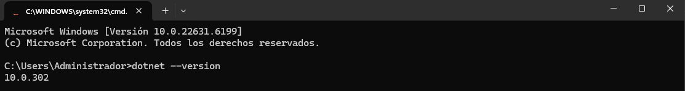
Instalación del SDK .NET 10.0.401
Se actualizó el SDK a la versión solicitada para la práctica.
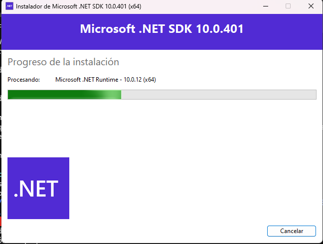
Comprobación de la versión instalada
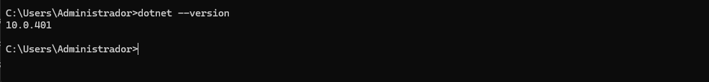
Actualización mediante Winget
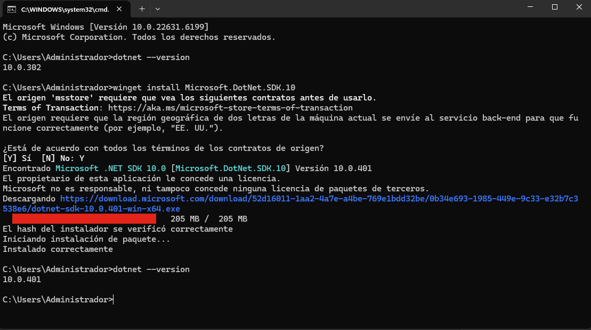
Listado inicial de plantillas
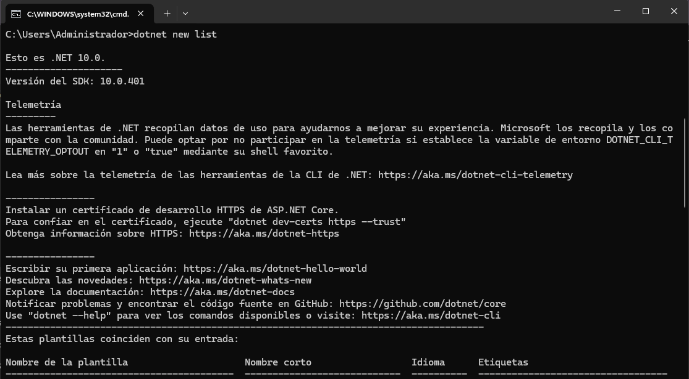
Plantillas disponibles
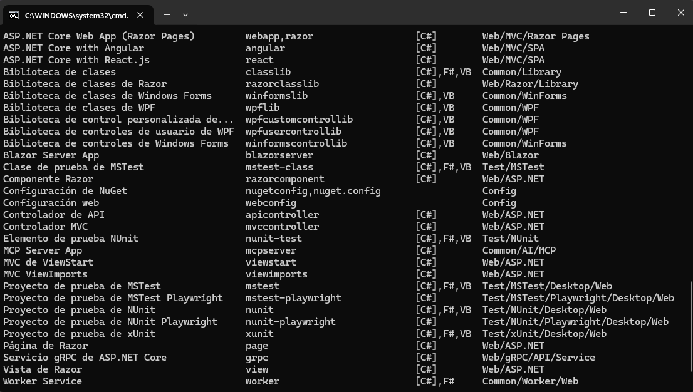
Creación de la carpeta de trabajo
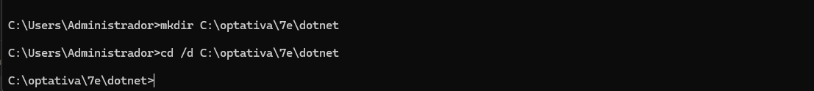
Creación del proyecto webpneon
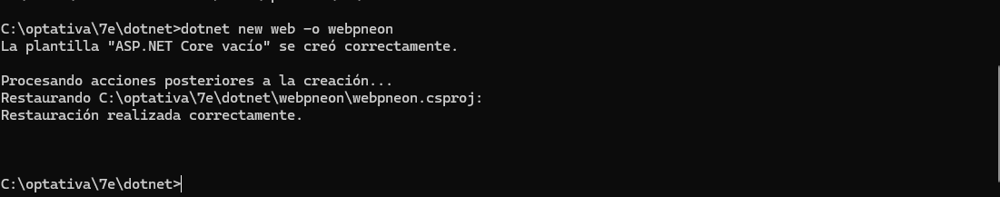
Acceso al proyecto
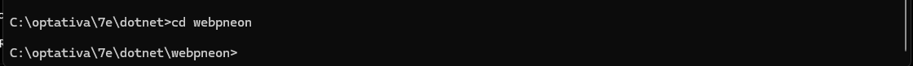
Compilación inicial
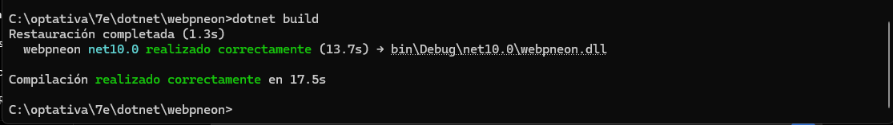
Ejecución inicial
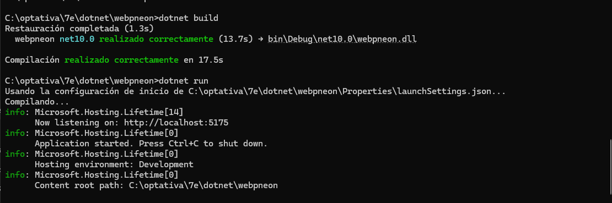
Hello World
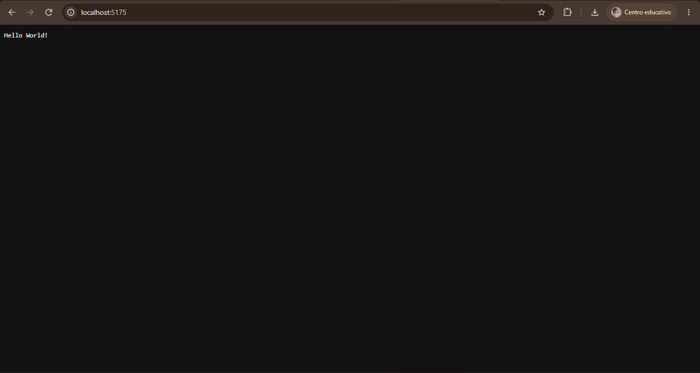
Creación de la tabla alumnos
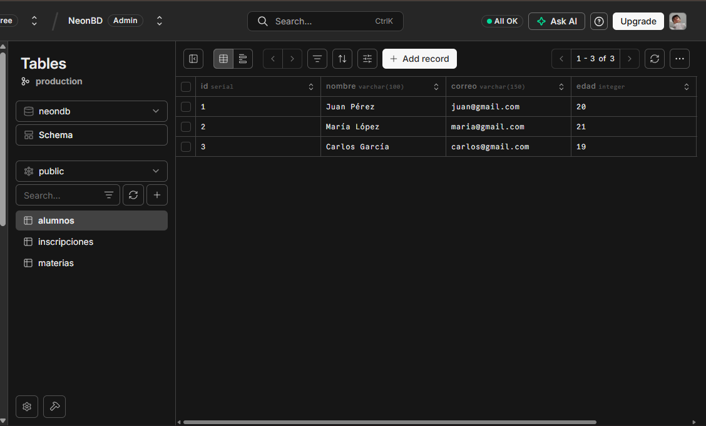
Obtención de la cadena de conexión
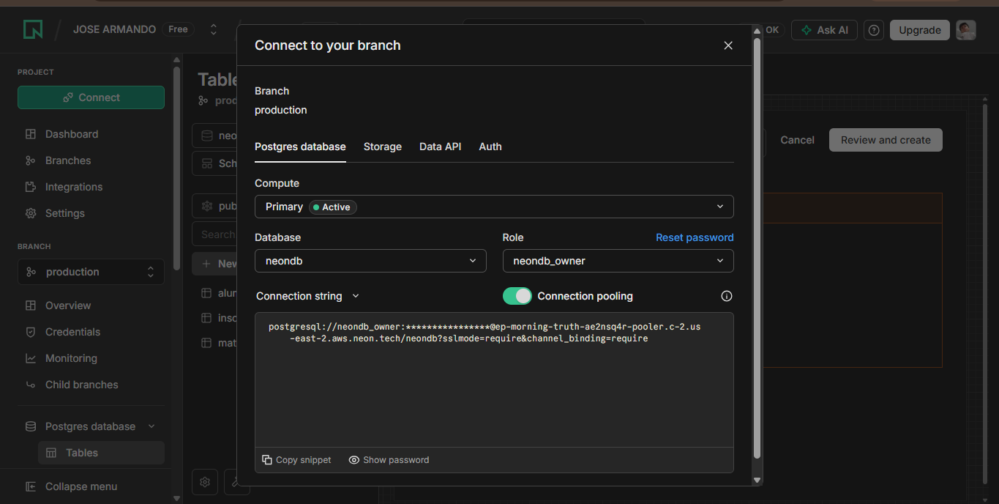
Configuración de appsettings.json
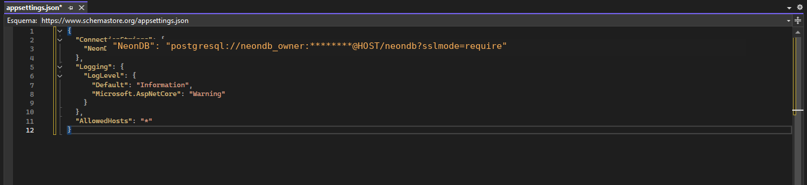
Instalación de Npgsql
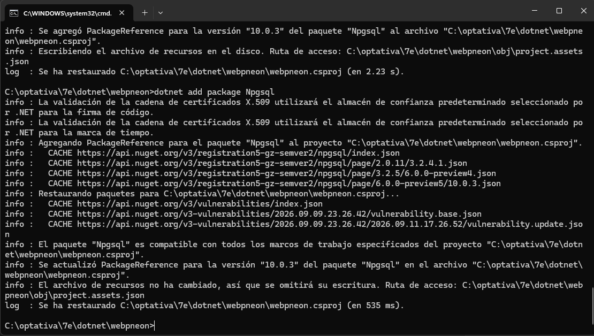
Conexión exitosa
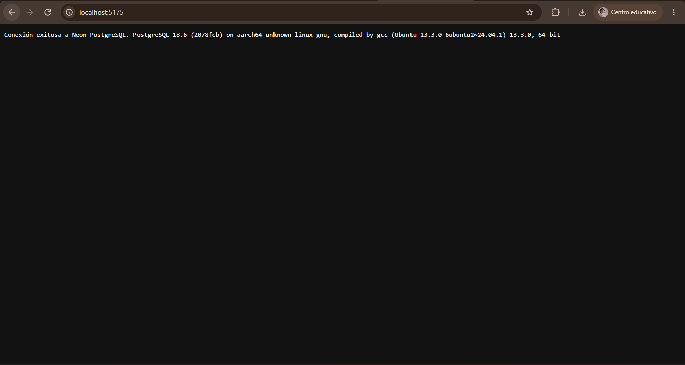
Instalación de Dapper
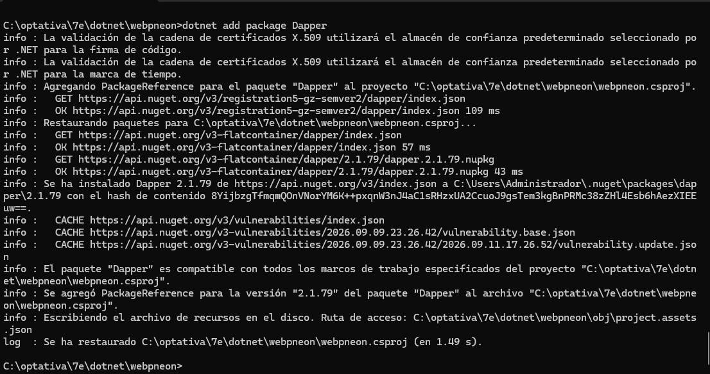
Program.cs actualizado
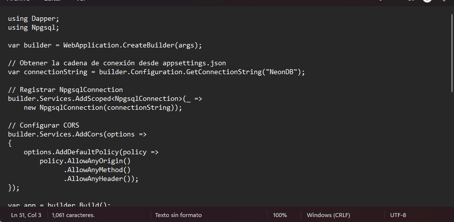
Consulta del endpoint /alumnos
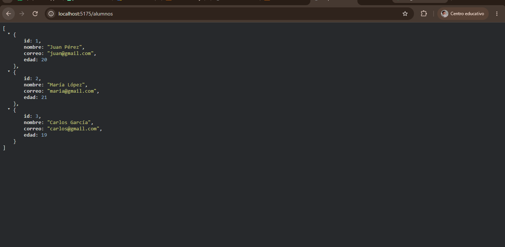
Compilación final y reapertura del proyecto
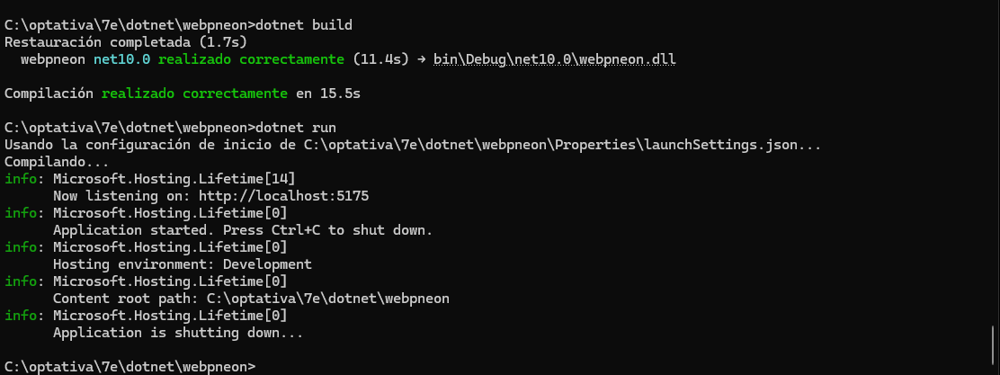
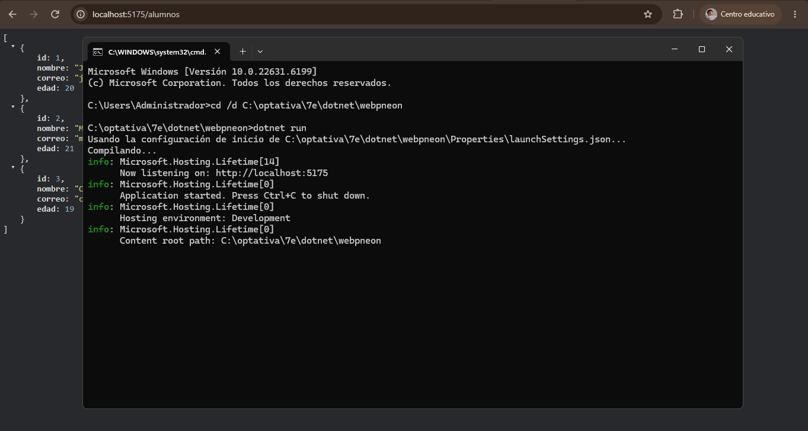
Conclusión
Durante esta práctica se configuró correctamente un proyecto de ASP.NET Core con .NET 10, estableciendo una conexión con PostgreSQL alojado en Neon mediante Npgsql y realizando consultas con Dapper.
Finalmente se comprobó el funcionamiento del endpoint /alumnos,
obteniendo los registros almacenados en la base de datos.
Referencias
- Microsoft Learn – ASP.NET Core.
- Documentación oficial de Neon PostgreSQL.
- Documentación oficial de Npgsql.
- Documentación oficial de Dapper.